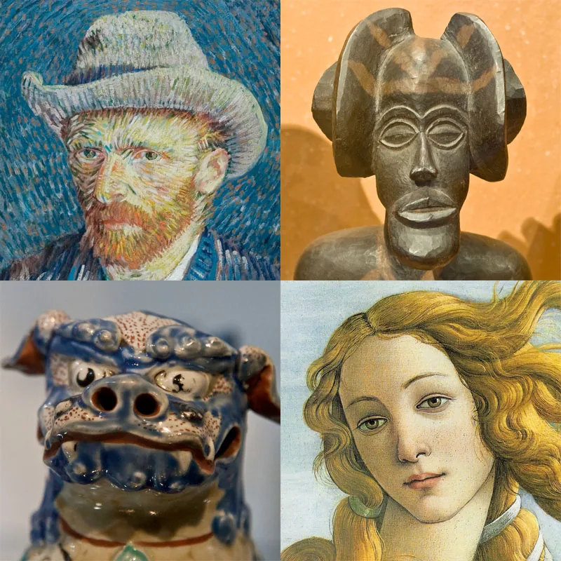
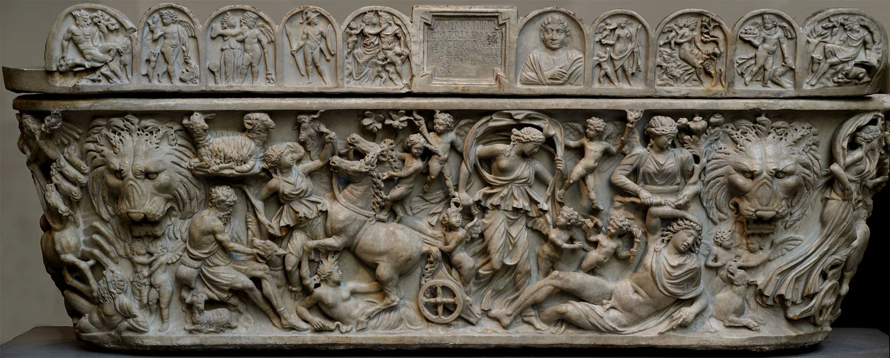
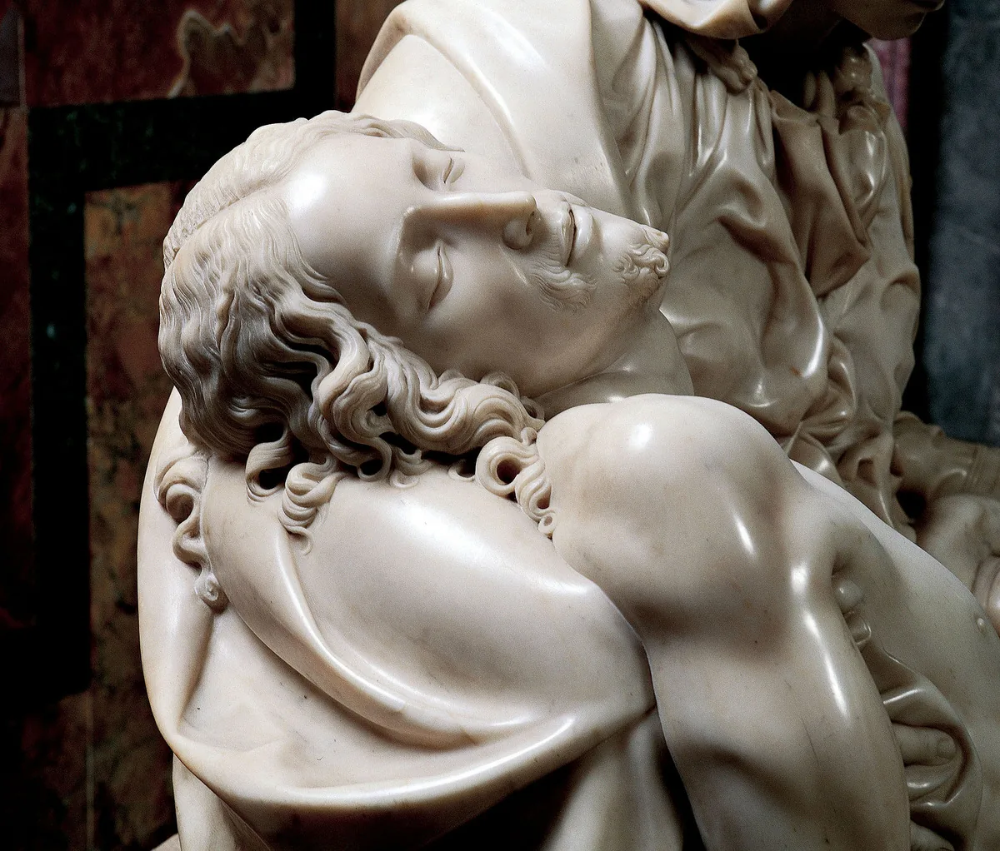
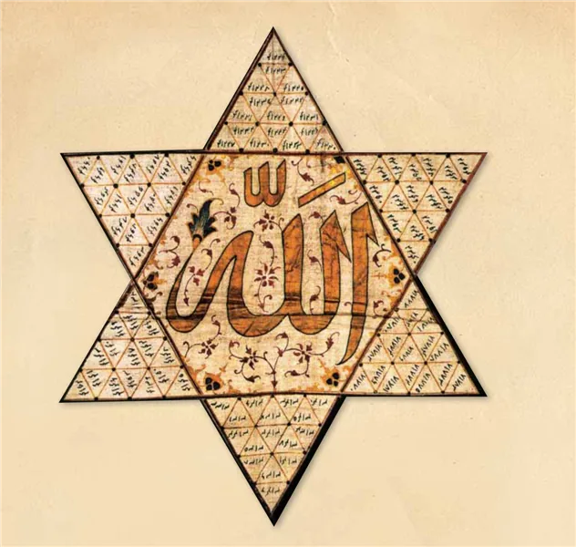
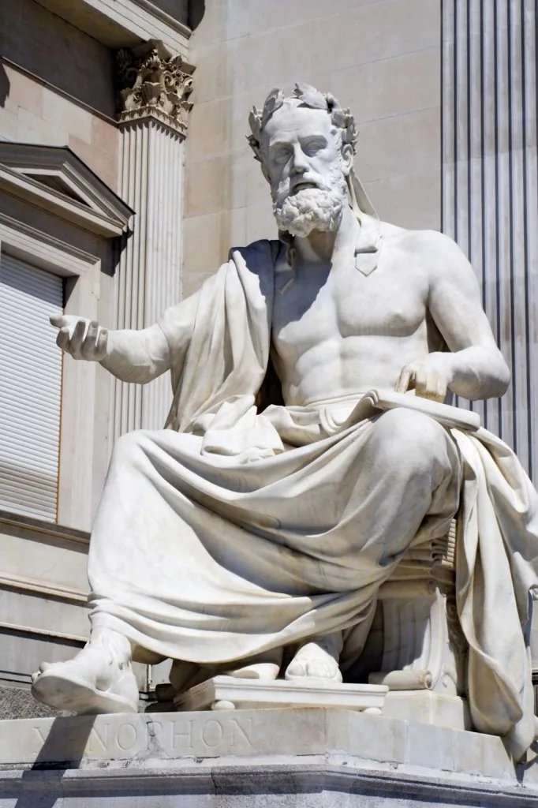
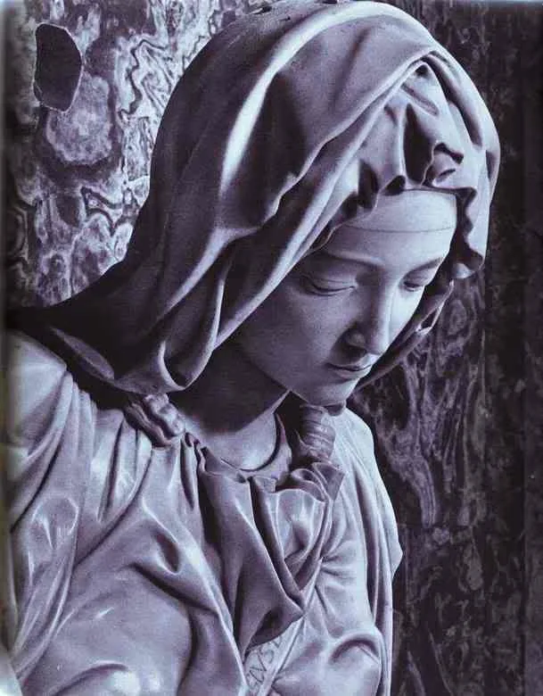
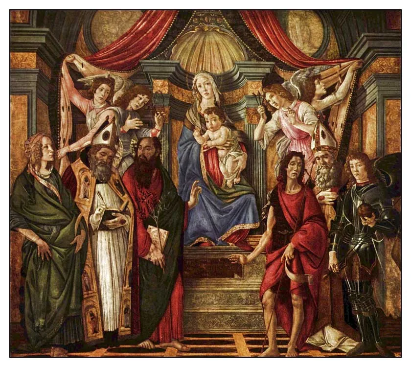
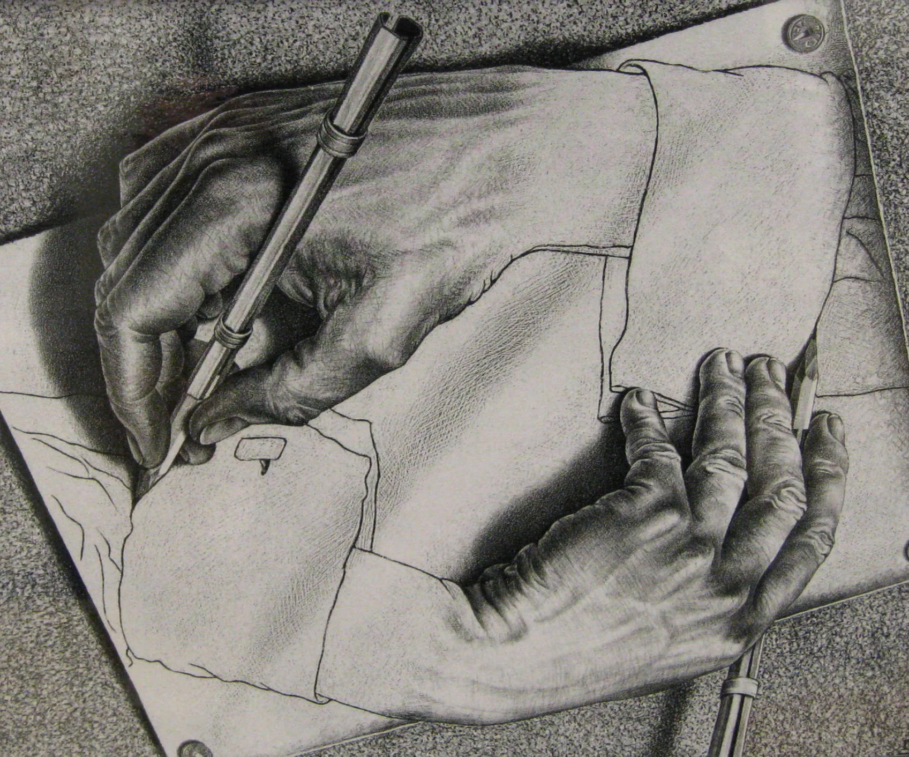

Feindseligkeit gegenüber Kunst, Musik, Bildhauerei, Malerei, Schach

Um den Unterschied zwischen dem vom Koran beschriebenen Islam und dem Islam der Rechtsschulen besser zu verstehen, ist es hilfreich, einige konkrete Themen zu untersuchen. Der Vergleich ermöglicht es, die grundlegenden Differenzen zwischen der klaren, einheitlichen Botschaft des Koran und den oft widersprüchlichen und menschlich konstruierten Regeln der Rechtsschulen zu erkennen. In diesem Abschnitt werden wir Themen wie Musik und Kunst betrachten, um diesen Unterschied exemplarisch aufzuzeigen.
Die ganze Schöpfung ist das Kunstwerk Gottes
Gott offenbart Seine Kunst und Macht auf vielfältige Weise: Manchmal in den Bewegungen der Erde, im Regen, im Gesang eines Vogels oder in den Farben einer Veilchenblüte. Ebenso können ein Musikstück, eine Skulptur oder ein Gemälde Ausdruck von Gottes Kunst, Wissen und Macht sein. Alles, was existiert, wurde von Gott erschaffen. Er ist der Schöpfer der Rohstoffe des Universums und der physikalischen, chemischen und biologischen Gesetze, die diese Rohstoffe ordnen und gestalten. Menschen nutzen die von Gott geschaffenen Rohstoffe, wie etwa Eisen, und formen sie gemäß den von Gott geschaffenen physikalischen und chemischen Gesetzen. Durch diese Prozesse entstehen Produkte wie Autos oder Flugzeuge, die auf Berechnungen und mechanischen Prinzipien basieren. Diese Erfindungen des Menschen sind in Wahrheit Entdeckungen der Potenziale, die Gott im Universum verborgen hat. Ebenso verhält es sich mit der Musik: Ein Musikstück besteht aus Klängen und Noten, die potenziell bereits in der Schöpfung angelegt sind. Der Musiker entdeckt diese Potenziale und verwandelt sie in Melodien und Kompositionen. Ein Verstand, der fähig ist, die Beweise für Gottes Existenz in jeder Ecke des Universums zu erkennen, und Augen, die nicht nur sehen, sondern auch wahrnehmen können, entdecken Gottes Zeichen in der Musik, in jedem Kunstwerk und in der Schönheit der Schöpfung.363 Im gesamten Koran gibt es keine einzige Stelle, die Musik, Bildhauerei oder Malerei verbietet oder sie als schlechte Beschäftigung darstellt. Doch die Rechtsschulen haben viele Bereiche der Kunst, die Ausdruck von Gottes Schönheit und eine Quelle der Lebensfreude und Gnade für die Menschen sind, als verboten (haram) erklärt und versucht, ihre karge Weltsicht auch anderen aufzuzwingen. Wie wir bereits gesehen haben, ist im Koran alles erlaubt, was nicht ausdrücklich verboten ist. Verbote sind Ausnahmen und bedürfen eines klaren göttlichen Gebots, also einer entsprechenden Koranverse. Da es im Koran keinerlei Verbot für Musik, Bildhauerei oder Malerei gibt, ist ihre Erlaubnis selbstverständlich; sie bedarf keiner weiteren Erklärung – genauso wenig, wie es einer speziellen Erlaubnis für den Verzehr von Auberginen bedarf. Der Koran enthält keine Aussage, dass Auberginen verboten seien, und allein das macht sie erlaubt. Es bedarf keiner weiteren Klarstellung wie „Ihr dürft Auberginen essen“. Nun wollen wir uns ansehen, welche Verbote die Rechtsschulen in Bezug auf Musik und Kunst erdacht haben.
Was mit dem Musikhörer geschieht
„Wer Musik hört, dem wird es im Paradies nicht erlaubt sein, die geistigen Klänge zu hören.“364
„Eine Gruppe aus meiner Gemeinschaft wird reines Seidengewand und Musikinstrumente für erlaubt erklären.“366
„Gott hat den Gesang, seinen Handel, sein Einkommen, seine Lehre und das Hören verboten.“367
Muhammad al-Ghazali (geboren 1917 in Ägypten), der diesen letzte Hadith in seinem Buch erwähnt, beweist mit den Ausführungen von Ibn Hazm, der Prüfung der Überlieferer und Beispielen von dem Kalifen Umar, dass dieses Hadith sowie die zuvor analysierten Hadithe erfunden sind. Tatsächlich gibt es auch Hadithe, die zeigen, dass der Prophet Musik hörte und sie förderte. Dennoch haben viele Rechtsschulen, wie etwa die Hanafi-Schule, die verbietende Hadithe übernommen. Ein weiteres Beispiel für inkonsequente Argumentationen findet sich in den jeweiligen Handbüchern der Rechtsschulen, wo erklärt wird, dass Schlaginstrumente erlaubt seien, während Saiten- und Blasinstrumente verboten seien. Die Begründung lautet: „Da in der Zeit des Propheten die Musik mit Tamburinen gespielt wurde und er diese hörte, sind Schlaginstrumente wie Trommeln erlaubt, Saiten- und Blasinstrumente hingegen sind verboten (haram).“ Diese Logik zeigt, dass die rechtsschulischen Denksysteme unfähig sind, einfache Schlüsse zu ziehen, wie z. B., dass Instrumente verschiedener Kulturen ebenfalls erlaubt sein könnten. Die Weigerung, den Koran als alleinige Quelle des Islam anzusehen, hat zu Widersprüchen und Chaos in den Rechtsschulen geführt, auch in Bezug auf Musik. Würden diejenigen, die diese Haltung vertreten, konsequent handeln, müssten sie alle Orte verlassen, an denen Musik gespielt wird, und sogar auf Fernsehserien verzichten, in denen Musik im Hintergrund läuft. Doch wie viele bezeugen können, leben die Vertreter dieser Denkweise nicht gemäß ihren eigenen Prinzipien und befolgen ihre eigenen Regeln nicht aufrichtig.
Auch gegen Dichtung wurde eine ablehnende Haltung eingenommen, wenn auch nicht so stark wie gegen Musik. Besonders nichtreligiöse und Liebesgedichte wurden als unpassend angesehen, während religiöse Gedichte erlaubt waren:
„Es wäre besser, wenn der Bauch eines von euch mit Erbrochenem und Blut gefüllt wäre, als mit Dichtung.“368

Im Gegensatz zur Dichtung wurde Bildhauerei fast einstimmig von allen Rechtsschulen abgelehnt. Möglicherweise liegt dies an der historischen Befürchtung, dass sie zu Götzendienst führen könnte. Solche Ablehnungen, die nicht auf dem Koran basieren, sollten jedoch als zeitgeschichtliche Ansichten betrachtet werden und nicht als universelle islamische Vorschriften. Wenn Bildhauerei mit der Begründung abgelehnt wird, sie führe zu Götzendienst, könnte dies auch auf andere Aspekte übertragen werden: Hindus verehren Kühe – müssten alle Kühe getötet werden? Feueranbeter verehren das Feuer – sollte Feuer verboten werden? Und was ist mit Sonnenanbetern – sollten wir uns in einem fensterlosen Raum vor der Sonne verstecken? Solche Argumentationen sind weder mit dem Koran noch mit Logik vereinbar. Im Koran wird Bildhauerei sogar positiv erwähnt, wie in der Erzählung über die Herrschaft Salomons:


Wie bewerten Rechtsschulen-Befürworter überhaupt den Propheten Salomo?

Während Gott im Koran die Bildhauerei als Zeichen von Stärke und Schönheit darstellt, wie können Rechtsschulen-Befürworter sie ablehnen? War der Prophet Salomo etwa nicht islamisch genug, da er gemäß dem oben genannten Koranvers Statuen anfertigen ließ? Sind diese Kritiker frommer als der Prophet Salomo selbst oder war der Prophet Salomo ein Sünder? Das Ergebnis davon, wenn Menschen nicht mit dem zufrieden sind, was Gott offenbart hat, und sich eigene „Religionen” schaffen, sind die chaotischen, widersprüchlichen und mit Erfindungen durchsetzten Strukturen der Rechtsschulen.

„Wer ein Bild anfertigt, wird von Gott am Tag des Gerichts für dieses Bild bestraft, bis er ihm eine Seele einhaucht. Doch er wird niemals in der Lage sein, diesem Bild eine Seele einzuhauchen.“369
„In ein Haus, in dem sich ein Hund oder ein Bild befindet, treten die Engel nicht ein.“370
Die Feindseligkeit gegenüber Kunst ist im Islam-Verständnis der Rechtsschulen besonders stark im Bereich der Malerei. Das Zeichnen von lebendigen Figuren wurde wie die Bildhauerei verboten, obwohl es im Koran keinerlei Grundlage für ein solches Verbot gibt. Gleichzeitig wurde durch dieselben Überlieferungen die Haltung eingeführt, dass das Halten von Hunden im Haus verboten sei. Kritiker machen sich über diese Logik lustig und stellen Fragen wie: „Wenn ich einen Hund halte oder ein Bild im Haus aufhänge, kommt dann Azrael, der Engel des Todes, nicht in mein Haus? Bedeutet das, dass ich, solange ich zu Hause bin, nicht sterben kann?“ Diese falschen Darstellungen des Islam haben Menschen vom Glauben entfremdet und Gläubige von den schönen Dingen, die Gott für sie geschaffen hat, wie Musik, Bildhauerei und Malerei, ferngehalten. Doch im Koran spricht Gott klar:


Nach dem Koran genießen Gläubige die von Gott erlaubten Schönheiten und danken Ihm dafür. Die Befürworter der Rechtsschulen jedoch setzen auf Verbote, Erschwernisse, Hässlichkeit und Entbehrung. Sie glauben, Menschen Gott näher zu bringen und sie zu besseren Gläubigen zu machen, indem sie Dinge verbieten, die Gott nicht verboten hat. Doch Gott verurteilt sowohl die Hinzufügung als auch die Reduzierung im Islam. Beides bedeutet, das Göttliche mit dem Menschlichen zu vermischen:
Die Feinde der Farben des Lebens
Weil sich entgegen den Geboten Gottes in solchen und ähnlichen Versen verhalten wurde, hat die Einstellung gegenüber dem Islam erheblichen Schaden genommen. Wären beispielsweise all diese Einschränkungen in Bezug auf Musik nicht gewesen, hätten sicherlich weit mehr Musiker und Musikwerke aus der islamischen Welt hervorgehen können. Während die christliche Verfälschung eher durch die Vergöttlichung ihrer Propheten wirksam war, verfälschten unsere eigenen Verfälscher den Islam durch Hinzufügungen und schädigten sie dadurch, dass sie das Leben farblos machten. Mithilfe von Musik hätten zahlreiche islamische Botschaften vermittelt und viele Wahrheiten ins Unterbewusstsein der Menschen verankert werden können. Wenn wir die wenigen religiösen Musikwerke bei uns mit der unzähligen Produktion der Christen und deren positiven Einsatz zur Darstellung des Glaubens vergleichen, wird deutlich, welchen Schaden das Musikverbot dem Islam zugefügt hat. Genauso wie das Verbot von Skulpturen und anderen Kunstformen, hätten auch diese Elemente genutzt werden können, um einen ästhetischen Lebensstil zu entwickeln, wie ihn die Christen pflegen. Viele Menschen sind, trotz der absurden Auslegungen, die durch christliche Verfälschungen in den Glauben eingeführt wurden, allein durch diesen Lebensstil Christen geworden. Die Rechtsschulen, die den Glaubensbereich zwar besser vor Verfälschungen geschützt haben, jedoch den Praxisbereich für Verfälschungen weit geöffnet ließen, haben hingegen trotz ihrer vernünftigeren Glaubenserklärungen durch ihre farblose und unübersichtliche Lebensauffassung viele Menschen von dem Islam abgeschreckt. Massen, die den Unterschied zwischen dem Islam, die im Koran beschrieben wird, und der verfälschten Religion nicht kennen, haben sich auch von der von der Wüstenmentalität der Beduinen geprägten, kunstfeindlichen Darstellung des Glaubens abgewandt, da sie diese als den wahren Islam missverstanden haben. Genauso wie die Christen gezwungen sind, die ihren Glauben verfälschenden und Jesus vergöttlichenden Auslegungen zu beseitigen, um die von Gott offenbarte Form des Islam wieder hervorzubringen, müssen auch wir den Islam von diesen Hinzufügungen befreien und uns vom Islam der Rechtsschulen, Traditionen und Verfälschungen zum Islam des Korans wenden.
Ist die Malerei schlimmer als Götzenverehrung?
Um die Unterdrückung der Kunst im Namen des „Islam“ besser zu verstehen, werfen wir einen Blick auf folgende erfundene Hadithe:
„Diejenigen, die Bilder malen, werden am Tag der Auferstehung gewiss bestraft. Zu ihnen wird gesagt: ‘Erweckt die von euch gemalten Bilder zum Leben.’“371
„Was diese Bildhauer betrifft, so wird ihnen am Tag der Auferstehung gesagt: ‘Erweckt die Bilder, die ihr gemacht habt, zum Leben’, und sie werden bestraft.“372
„Am Tag der Auferstehung wird die härteste Strafe den Malern zuteil.“373
Dem letzten Hadith zufolge könnte das Malen als gefährlicher angesehen werden als Ehebruch, Mord oder gar Götzendienst. Denn nach diesem erfundenen Hadith, der als „islamisches Wissen“ verbreitet wurde, wird behauptet, dass die Maler am schwersten bestraft würden – nicht die Götzendiener oder Mörder. Dies zeigt erneut, wie wichtig es ist, keine andere islamische Quelle als den Koran zu akzeptieren und sich nicht als Anhänger einer Rechtsschule, sondern schlicht als „Muslim“ zu betrachten. Diejenigen, die behaupten, Uneinigkeit sei positiv, sind sich sogar uneins darüber, wer die härteste Strafe erhalten soll. Diese Uneinigkeit wird durch die Behauptung eines Schach-feindlichen Hadiths verdeutlicht:
„Am Tag der Auferstehung wird die schlimmste Strafe demjenigen zuteil, der Schach spielt.“374
Adh-Dhahabi überliefert auch, dass Ibn Abbas das Schachspiel eines Waisen verbrannte, da dies seiner Ansicht nach ein Beweis dafür sei, dass Schach verboten (haram) sei – andernfalls hätte er das Schachspiel nicht zerstört. Solche absurden Behauptungen und ähnliche, die in den Islam eingeführt wurden, müssen aus unserem Islam-Verständnis entfernt werden. Die Menschen sollten erkennen, dass solche Auslegungen das Werk von Wüstenbeduinen sind und im Islam, wie er im Koran beschrieben wird, keinen Platz haben.